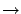

Haciendo click con el botón derecho del mouse en el nodo del
explorador de antenas correspondiente al tipo de antena a editar:
 Editar Tipo de Antena
Aparecerá una ventana similar a la de creación de un nuevo tipo de antena (ver 9), pero con los datos correspondientes al tipo de antena actual. Cambiar los valores deseados y hacer click en Aceptar.